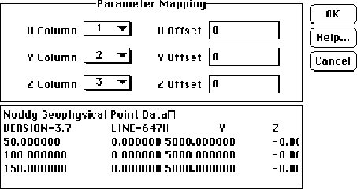

Borehole surveys
There is also a pair of options for calculating down hole surveys from internally generated or imported borehole specifications:
Borehole->Generate- This calculates a down hole survey using the borehole specifications in the Geology Options Window.
Borehole->Import- This calculates a down hole survey using the borehole specifications imported from an ASCII three column XYZ data file. You will have the opportunity to specify which columns refer to X, Y and Z. The area of the window below the Parameter Mapping section shows the first few lines of the file to aid in selecting the proper X,Y,Z columns.
Any input row starting with a number will be considred to be data, and any other row will be considered to be a comment.

| GROUP | NAME | FUNCTION |
|---|---|---|
| Parameter Mapping | X Column | Column containing X position data |
| Y Column | Column containing Y position data | |
| Z Column | Column containing Z position data | |
| X Offset | Offset applied to input X position | |
| Y Offset | Offset applied to input Y position | |
| Z Offset | Offset applied to input Z position |
Noddy · open source under the MIT licence · Loop3D/noddy_qt